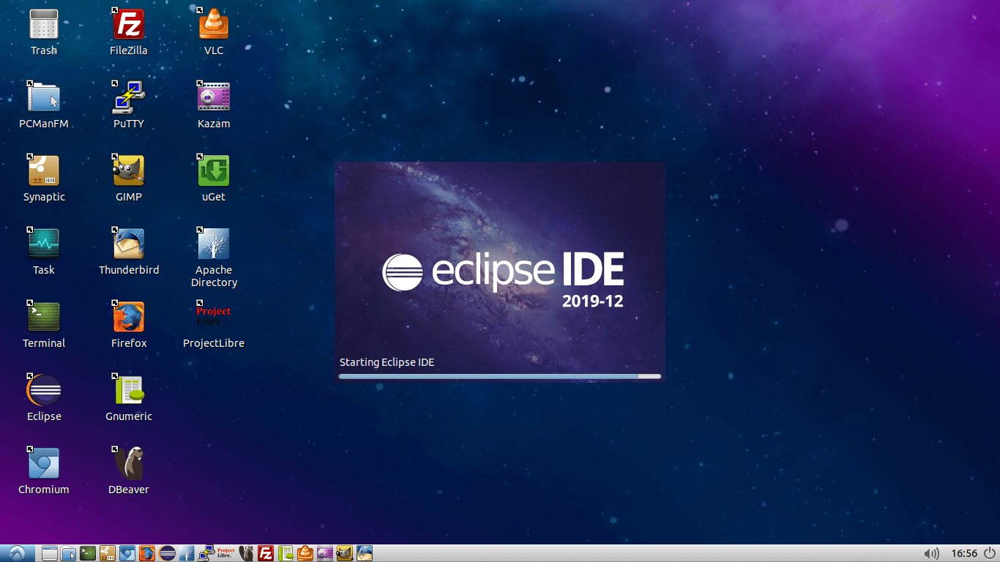
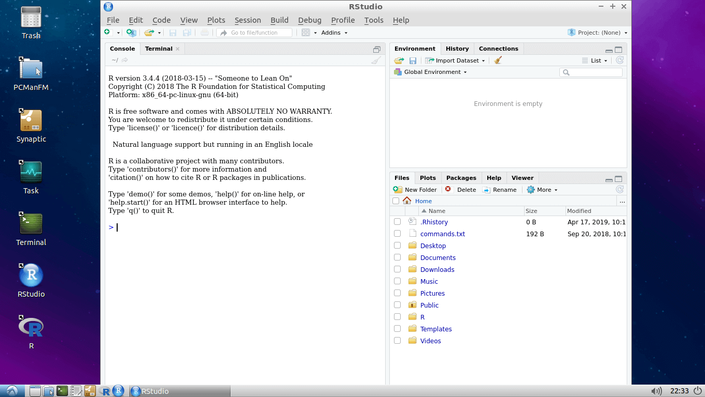
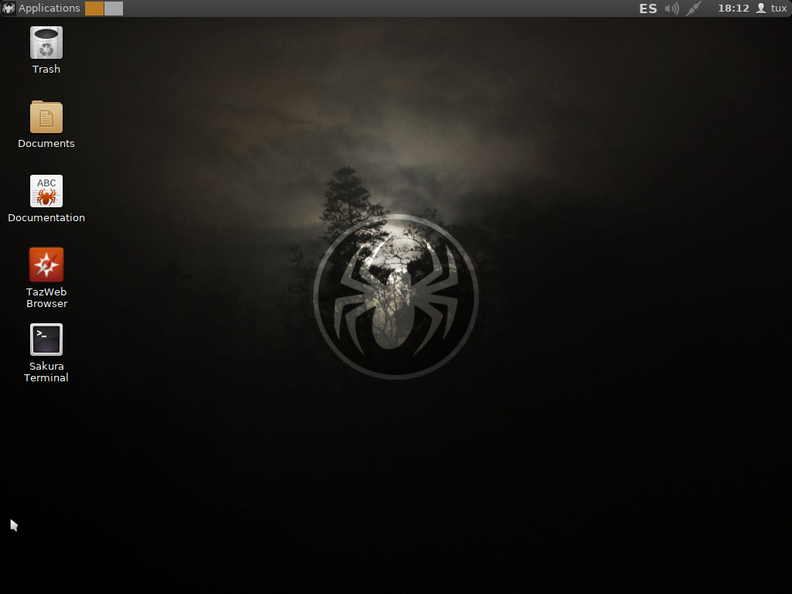
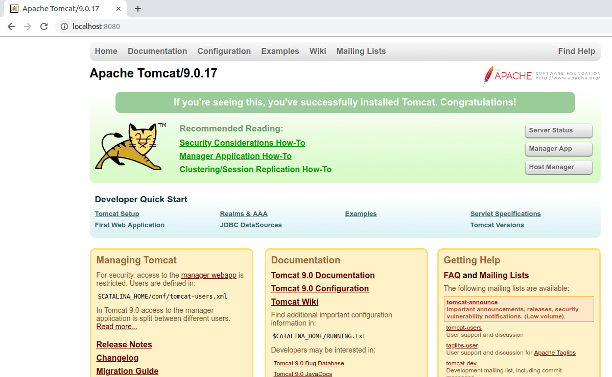

Virtual Machines
VirtualBox OVA files and tutorials. The idea of Virtual Machines is to simplify developers configuration work through lightweight and powerful environments

Java Environment: Spring MVC Maven project and virtual machine
Anaconda Python 3 and R Distribution. Has an Auto-Keras special edition
Lubuntu Bionic 18.04.3 Minimal and Full virtual machines
Angular 8 with Visual Studio Code and StackBlitz development environments
ReactOS (experimental alpha) with VirtualBox Guest Additions installed
PRO1 and PRO2 FIB UPC development environment. C++ with p1++ and p2++ aliases
LubuMaster is an experimental Lubuntu based distro that builds custom distributions

RStudio development environment in a virtual machine

SliTaz in a virtual machine

Tomcat 9 with JRE 8 in a virtual machine
Qt Creator Community IDE in a virtual machine
VirtualBox Tutorials